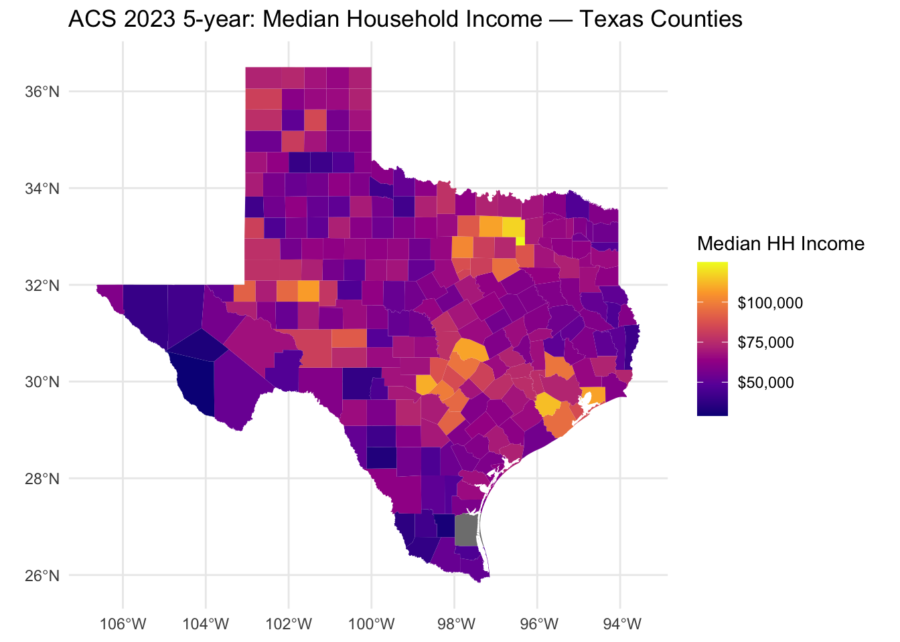

# Load packages
library(tidycensus)
library(tigris)
library(sf)
library(dplyr)
library(ggplot2)
library(readr)
library(knitr)
options(tigris_use_cache = TRUE)
# Set your Census API key for this R session
# (replace "YOUR_KEY_HERE" with your actual key)
census_api_key("52fd7a1a4a82921f1fd9dd3db0c338d2351c5ee1", install = FALSE)Assignment 3: Mapping Census Data
Objective
In this assignment, I use ACS 2023 5-year data to map median household income and summarize poverty for Texas counties.
Choose geography and variables
# Texas state abbreviation
state_tx <- "TX"
# Named vector of variables
acs_vars <- c(
med_income = "B19013_001", # Median household income
poverty = "B17001_002" # People below poverty level
)Download ACS 2023 5-year data (with geometry)
tx_acs <- get_acs(
geography = "county",
state = state_tx,
variables = acs_vars,
year = 2023,
survey = "acs5",
geometry = TRUE,
output = "wide" # wide gives med_incomeE, med_incomeM, etc.
)
|
| | 0%
|
| | 1%
|
|= | 1%
|
|= | 2%
|
|== | 2%
|
|== | 3%
|
|== | 4%
|
|=== | 4%
|
|=== | 5%
|
|==== | 5%
|
|==== | 6%
|
|===== | 6%
|
|===== | 7%
|
|===== | 8%
|
|====== | 8%
|
|====== | 9%
|
|======= | 9%
|
|======= | 10%
|
|======= | 11%
|
|======== | 11%
|
|======== | 12%
|
|========= | 12%
|
|========= | 13%
|
|========= | 14%
|
|========== | 14%
|
|========== | 15%
|
|=========== | 15%
|
|=========== | 16%
|
|============ | 16%
|
|============ | 17%
|
|============ | 18%
|
|============= | 18%
|
|============= | 19%
|
|============== | 19%
|
|============== | 20%
|
|============== | 21%
|
|=============== | 21%
|
|=============== | 22%
|
|================ | 22%
|
|================ | 23%
|
|================ | 24%
|
|================= | 24%
|
|================= | 25%
|
|================== | 25%
|
|================== | 26%
|
|=================== | 26%
|
|=================== | 27%
|
|=================== | 28%
|
|==================== | 28%
|
|==================== | 29%
|
|===================== | 29%
|
|===================== | 30%
|
|===================== | 31%
|
|====================== | 31%
|
|====================== | 32%
|
|======================= | 32%
|
|======================= | 33%
|
|======================= | 34%
|
|======================== | 34%
|
|======================== | 35%
|
|========================= | 35%
|
|========================= | 36%
|
|========================== | 36%
|
|========================== | 37%
|
|========================== | 38%
|
|=========================== | 38%
|
|=========================== | 39%
|
|============================ | 39%
|
|============================ | 40%
|
|============================ | 41%
|
|============================= | 41%
|
|============================= | 42%
|
|============================== | 42%
|
|============================== | 43%
|
|============================== | 44%
|
|=============================== | 44%
|
|=============================== | 45%
|
|================================ | 45%
|
|================================ | 46%
|
|================================= | 46%
|
|================================= | 47%
|
|================================= | 48%
|
|================================== | 48%
|
|================================== | 49%
|
|=================================== | 49%
|
|=================================== | 50%
|
|=================================== | 51%
|
|==================================== | 51%
|
|==================================== | 52%
|
|===================================== | 52%
|
|===================================== | 53%
|
|===================================== | 54%
|
|====================================== | 54%
|
|====================================== | 55%
|
|======================================= | 55%
|
|======================================= | 56%
|
|======================================== | 56%
|
|======================================== | 57%
|
|======================================== | 58%
|
|========================================= | 58%
|
|========================================= | 59%
|
|========================================== | 59%
|
|========================================== | 60%
|
|========================================== | 61%
|
|=========================================== | 61%
|
|=========================================== | 62%
|
|============================================ | 62%
|
|============================================ | 63%
|
|============================================ | 64%
|
|============================================= | 64%
|
|============================================= | 65%
|
|============================================== | 65%
|
|============================================== | 66%
|
|=============================================== | 66%
|
|=============================================== | 67%
|
|=============================================== | 68%
|
|================================================ | 68%
|
|================================================ | 69%
|
|================================================= | 69%
|
|================================================= | 70%
|
|================================================= | 71%
|
|================================================== | 71%
|
|================================================== | 72%
|
|=================================================== | 72%
|
|=================================================== | 73%
|
|=================================================== | 74%
|
|==================================================== | 74%
|
|==================================================== | 75%
|
|===================================================== | 75%
|
|===================================================== | 76%
|
|====================================================== | 76%
|
|====================================================== | 77%
|
|====================================================== | 78%
|
|======================================================= | 78%
|
|======================================================= | 79%
|
|======================================================== | 79%
|
|======================================================== | 80%
|
|======================================================== | 81%
|
|========================================================= | 81%
|
|========================================================= | 82%
|
|========================================================== | 82%
|
|========================================================== | 83%
|
|========================================================== | 84%
|
|=========================================================== | 84%
|
|=========================================================== | 85%
|
|============================================================ | 85%
|
|============================================================ | 86%
|
|============================================================= | 86%
|
|============================================================= | 87%
|
|============================================================= | 88%
|
|============================================================== | 88%
|
|============================================================== | 89%
|
|=============================================================== | 89%
|
|=============================================================== | 90%
|
|=============================================================== | 91%
|
|================================================================ | 91%
|
|================================================================ | 92%
|
|================================================================= | 92%
|
|================================================================= | 93%
|
|================================================================= | 94%
|
|================================================================== | 94%
|
|================================================================== | 95%
|
|=================================================================== | 95%
|
|=================================================================== | 96%
|
|==================================================================== | 96%
|
|==================================================================== | 97%
|
|==================================================================== | 98%
|
|===================================================================== | 98%
|
|===================================================================== | 99%
|
|======================================================================| 99%
|
|======================================================================| 100%dplyr::glimpse(tx_acs)Rows: 254
Columns: 7
$ GEOID <chr> "48355", "48215", "48061", "48479", "48057", "48323", "484…
$ NAME <chr> "Nueces County, Texas", "Hidalgo County, Texas", "Cameron …
$ med_incomeE <dbl> 66021, 52281, 51334, 62506, 71870, 51270, 59673, 95155, 39…
$ med_incomeM <dbl> 1570, 1265, 1640, 2316, 10785, 5723, 4312, 2480, 17125, 28…
$ povertyE <dbl> 61023, 237121, 102583, 55716, 1717, 12981, 8377, 27057, 49…
$ povertyM <dbl> 3709, 8739, 4345, 4052, 468, 1758, 1316, 2210, 259, 1500, …
$ geometry <MULTIPOLYGON [°]> MULTIPOLYGON (((-97.11172 2..., MULTIPOLYGON …Map: median household income by county
ggplot(tx_acs) +
geom_sf(aes(fill = med_incomeE), color = NA) +
scale_fill_viridis_c(
option = "plasma",
labels = scales::label_dollar(prefix = "$")
) +
labs(
title = "ACS 2023 5-year: Median Household Income — Texas Counties",
fill = "Median HH Income"
) +
theme_minimal()
The map shows that counties around large metros such as Dallas–Fort Worth, Austin, and Houston tend to have higher median incomes, while many rural counties in West and South Texas have lower incomes.
Table: top and bottom 10 counties by people below poverty
tx_poverty_tbl <- tx_acs |>
sf::st_drop_geometry() |>
dplyr::select(
county = NAME,
povertyE,
povertyM,
med_incomeE,
med_incomeM
)
# Top 10 counties by number of people below poverty
top10_poverty <- tx_poverty_tbl |>
dplyr::arrange(dplyr::desc(povertyE)) |>
dplyr::slice_head(n = 10) |>
dplyr::mutate(rank_group = "Highest poverty (count)")
# Bottom 10 counties by number of people below poverty
bottom10_poverty <- tx_poverty_tbl |>
dplyr::arrange(povertyE) |>
dplyr::slice_head(n = 10) |>
dplyr::mutate(rank_group = "Lowest poverty (count)")
combined_tbl <- dplyr::bind_rows(top10_poverty, bottom10_poverty) |>
dplyr::select(
rank_group,
county,
povertyE, povertyM,
med_incomeE, med_incomeM
)
kable(
combined_tbl,
caption = "Top and bottom 10 Texas counties by number of people below poverty (ACS 2023 5-year). E = Estimate, M = Margin of Error."
)| rank_group | county | povertyE | povertyM | med_incomeE | med_incomeM |
|---|---|---|---|---|---|
| Highest poverty (count) | Harris County, Texas | 749481 | 15891 | 73104 | 650 |
| Highest poverty (count) | Dallas County, Texas | 359950 | 10475 | 74149 | 771 |
| Highest poverty (count) | Bexar County, Texas | 294002 | 8323 | 70571 | 776 |
| Highest poverty (count) | Hidalgo County, Texas | 237121 | 8739 | 52281 | 1265 |
| Highest poverty (count) | Tarrant County, Texas | 229884 | 7849 | 81905 | 930 |
| Highest poverty (count) | El Paso County, Texas | 160998 | 7148 | 58859 | 1208 |
| Highest poverty (count) | Travis County, Texas | 140926 | 6636 | 97169 | 1289 |
| Highest poverty (count) | Cameron County, Texas | 102583 | 4345 | 51334 | 1640 |
| Highest poverty (count) | Collin County, Texas | 69846 | 4614 | 117588 | 1528 |
| Highest poverty (count) | Denton County, Texas | 65649 | 4233 | 108185 | 1464 |
| Lowest poverty (count) | Kenedy County, Texas | 3 | 5 | NA | NA |
| Lowest poverty (count) | Loving County, Texas | 5 | 7 | 51087 | 613 |
| Lowest poverty (count) | King County, Texas | 29 | 26 | 70192 | 28406 |
| Lowest poverty (count) | Borden County, Texas | 35 | 28 | 64250 | 20041 |
| Lowest poverty (count) | Sterling County, Texas | 37 | 25 | 78750 | 69746 |
| Lowest poverty (count) | Roberts County, Texas | 50 | 35 | 66118 | 8220 |
| Lowest poverty (count) | Kent County, Texas | 56 | 32 | 71420 | 4616 |
| Lowest poverty (count) | McMullen County, Texas | 57 | 47 | 45833 | 25091 |
| Lowest poverty (count) | Terrell County, Texas | 70 | 46 | 46989 | 12811 |
| Lowest poverty (count) | Glasscock County, Texas | 91 | 67 | 106806 | 46346 |
The highest-poverty counties by count are mostly large, population-dense counties, while the lowest-poverty counties are small counties with few residents. Looking at poverty counts together with median income highlights how both population size and income levels shape the distribution of poverty across Texas.